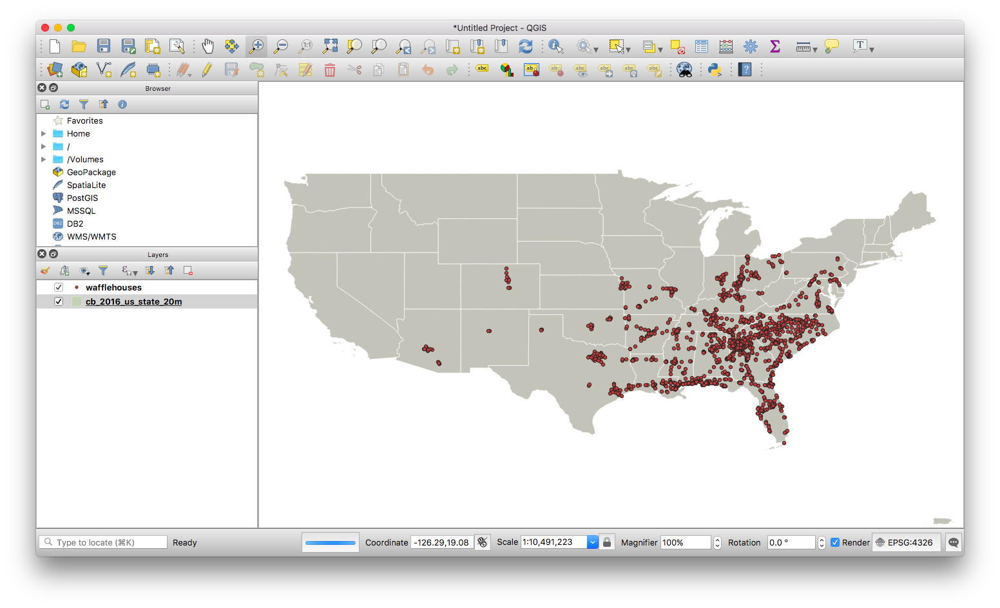
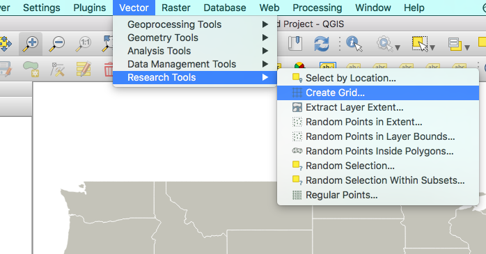

Building hex grids in QGIS
I have my points imported, but I’m also starting off with a shapefile so I can see where in the world I’m creating my grid.

Start to build a new grid by selecting Vector > Research Tools > Create Grid from the top menu.

Time to fill out a form!
First, you’re probably going to select Hexagon as your grid type.
For grid extent, I find it easiest to manually select the size. Click the ... box on the far right, and draw a box around where you’d like your grid to appear. Make sure you cover all of your points!
Now we set our Horizontal Spacing and Vertical Spacing. Make sure you set both of them!
They’re going to be in meters (eventually…), so if you want 50km you’ll want to put in 50000.
But wait, what’s this warning symbol over on the right? QGIS is telling us we aren’t using meters, we’re using degrees.
If you’re already in a projection that uses meters, you won’t have this problem!
To solve that, we need to change to a CRS that uses meters for its measurement. By default we’re using WGS 84, which is latitude/longitude (degrees). You’ll want to pick something like Conus Albers (best for continental USA, uses meters), or Google Pseudo-Mercator (for the world, also uses meters).
I recently used Conus Albers NAD83, so I was able to pick it from the dropdown right underneath.
If you want to use something else, you can always find it by clicking the button to the right and browsing.
Now let’s click Add to add our layer!
Even though we picked a meters projection, the grid looks all weird!!
If you’re already in your target projection, it won’t look bad. Remember, Conus Albers is only for the Continental United States! If you’re looking at a different area, you’ll probably want a different projection. Do research to find the best projection for your area.
That’s because even though we told it to use Conus Albers NAD83 to draw the grid, we’re looking at it in WGS 84. Let’s change the projection we’re rendering the map in to the right one now!
Grrrreat, all set!